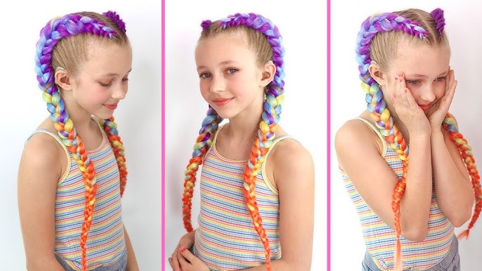

Už to není jen o tváři – Ksychtíkovo teď čaruje i s vlasy!

Ano, slyšíte dobře. V Ksychtíkově se už neřeší jen ksichtíky – teď si vezmeme na paškál i vlásky! Malování na obličej zůstává stálicí a tahákem na každé akci, ale od teď nabízíme ještě jednu šťavnatou parádu navíc: barevné copánky alias Dutch Hair Extensions!
Z tváře až do vlasů – upgrade, co stojí za to!
Představte si ten moment: dítě (nebo i dospělý, žádné předsudky) má na obličeji nádherného jednorožce s duhovým rohem, ale něco tomu pořád chybí... A pak přijde ta chvíle, kdy otočí hlavou – a v copáncích se zaleskne tyrkysová, fialová, růžová nebo třpytivě zlatá!
TADÁ! Zázrak je dokonán.
Dutch hair extensions jsou barevné syntetické vlákna, která se zaplétají přímo do vlastních vlasů a vytvářejí tak efekt plných, výrazných copánků. A nebojte – nepálí, nekoušou a nemusí se česat třikrát denně. Jsou pohodlné, lehoučké a hlavně – vypadají prostě božsky!
Pro koho jsou copánky?
Pro všechny! Opravdu.
Holky, kluci, maminky, klidně i strejda Franta, když mu ještě něco drží na hlavě.
Nejsme vlasová policie. Jsme tým snů. Pokud máš vlasy aspoň trošku delší než kartáček na zuby, my to tam napleteme.
- Malé parádnice – copánky jako z pohádky (ať ví všichni, že má doma princeznu)
- Klukovská rebélie – modrý pruh vlasů a obličej jako Batman? Kombinace století!
- Teenage duše – kdo říká, že styl nemá věkové hranice?
- Dospěláci – protože #festivalovýlook není jen pro mládež
Co všechno nabízíme?
Na akci si můžete vybrat z celého duhového menu copánků. Barvy klasické, pastelové, neonové, se třpytkami i ombré. Vždy se snažíme sladit s tím, co máš na obličeji – takže vznikají malé umělecké celky, které si zaslouží ovace a aspoň pět selfíček.
A víš co je nejlepší? Vše zvládáme přímo na místě. Vytvoříme copánek za pár minut, bez křiku, bez slz, jen s trochu svrběním na temeni. Výsledek? Úžasný. Trvanlivost? Dny. Zážitek? Nezapomenutelný.
Jak to vypadá v praxi?
Představ si ten mumraj na Dni dětí, oslavě nebo firemním pikniku. Děti běhají, někdo má na čele kočičí vousky, další pije limonádu brčkem ve tvaru žirafy. A pak se to stane – někdo zahlédne první copánek.
Za pět minut už máme frontu. Malujeme, pleteme, smějeme se. Rodiče fotí. Děti září.
A to je přesně ten moment, kdy akce přestává být "jen akce" a stává se zážitkem.
Nechceš si copánky sundat? Nemusíš!
Dutch extensions nejsou jen na chvilku. Když se o ně trochu postaráš, vydrží klidně několik dní.
Neublíží vlasům, dají se snadno rozplést a hlavně – každý copánek je tak trochu talismanem. Talismánem radosti, barvy a odvahy být jiný.
A jak to spojit s malováním?
To je to kouzlo! Kombinace obličejového malování a copánků je doslova neporazitelný tah. Tvář jako motýl, vlasy jako duha – no neříkej, že z toho nevzniká nejroztomilejší kombinace pod sluncem?
Zkrátka: Ksychtíkovo barví od ucha k uchu – a ještě dál!
Takže pokud chystáš oslavu, firemní den, festival, den otevřených dveří, jarmark nebo jakoukoli jinou událost, neobjednávej jen malování – dopřej svým hostům zážitek do posledního vlasu!
Protože copánky a malování? To je jako zmrzlina a šlehačka. Jde to zvlášť, ale dohromady je to pecka!
Ozvi se a rezervuj si Ksychtíkovo s copánky ještě dnes! Jestli tě zajímá, jak se správně copánky zaplétají, mrkni na tento web
mrkni na tento web návod na Dutch copánky s prodloužením.
Přivezeme barvy na tváře, barvy do vlasů a hromadu radosti. Protože my víme, že krása není jen v oku pozorovatele – ale i v každém copu, který si hrdě neseš domů.